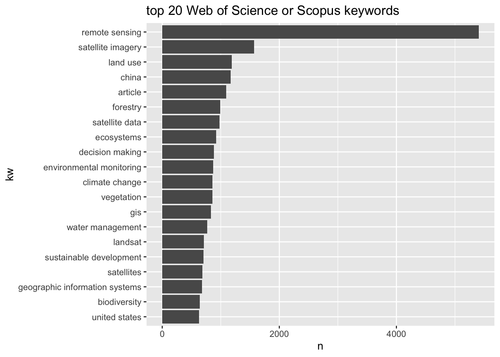

Code
library(tidyverse)
library(here)
library(tidytext)
source(here('common_fxns.R'))library(tidyverse)
library(here)
library(tidytext)
source(here('common_fxns.R'))article_df <- load_articles()article_kws_df <- article_df %>%
filter(field %in% c('keywords')) %>%
mutate(kw = str_split(text, '; |, ')) %>%
unnest(kw) %>%
mutate(kw = str_squish(kw)) %>%
filter(!is.na(kw)) %>%
group_by(kw) %>%
summarize(n = n_distinct(doc_id)) %>%
mutate(kw = fct_reorder(kw, n)) %>%
arrange(-n)
ggplot(article_kws_df %>% head(20) %>% mutate(kw = fct_drop(kw))) +
geom_col(aes(y = kw, x = n)) +
labs(title = 'top 20 Web of Science or Scopus keywords')
# article_kws_df %>% filter(n == 1) %>% DT::datatable()Web of Science search string for this domain are:
“satellite” OR “space-based” OR “remote observation” OR “remote sensing” OR “earth observation” OR “remotely sens*” OR “modis” OR “landsat”
compress_keywords <- function(kw) {
kw_compressed <- str_remove_all(kw, '"') %>% ### drop quotation marks
str_replace_all('[^a-zA-Z *]', '.?') %>% ### swap out punctuation for zero or one-space regex match
str_replace_all(' OR ', '|') %>% ### swap out OR statements with or operator
str_replace_all('\\*', '[a-z]*') ### replace asterisk with regex match for one or more letters
return(kw_compressed)
}esi_key_raw <- '"satellite" OR "space-based" OR "remote observation" OR "remote sensing" OR "earth observation" OR "remotely sens*" OR "modis" OR "landsat"'
esi_key <- compress_keywords(esi_key_raw)
esi_term_df <- article_df %>%
mutate(term = str_extract_all(text, esi_key)) %>%
unnest(term)This documents how many distinct papers (lit search results) note the use of each given term. Each term is only counted once per document per field - i.e., if “satellite” shows up three times in an abstract, it will only be counted once.
tally_results <- function(term_df) {
term_freq_df <- term_df %>%
select(doc_id, field, term) %>%
distinct() %>%
group_by(term, field) %>%
mutate(freq_term = n()) %>%
ungroup() %>%
mutate(term = fct_reorder(term, freq_term))
term_count_df <- term_df %>%
group_by(doc_id, field) %>%
summarize(n_terms = n_distinct(term))
return(list('freq' = term_freq_df, 'count' = term_count_df))
}esi_p_list <- tally_results(esi_term_df)
ggplot(esi_p_list$freq, aes(y = term)) +
geom_bar() +
facet_wrap(~ field, scales = 'free_x') +
theme_minimal() +
labs(x = 'Search result count', y = 'Expanded search term')
ggplot(esi_p_list$count, aes(y = n_terms)) +
geom_bar() +
facet_wrap(~ field, scales = 'free_x') +
theme_minimal() +
labs(x = 'Search result count', y = 'Number of distinct terms')
Web of Science search string for this domain are:
“decision” OR “optimization” OR “risk analysis” OR “management” OR “policy” OR “cost-benefit analysis” OR “benefit-cost analysis” OR “investment” OR “contingent valuation” OR “counterfactual”
decision_key_raw <- '"decision" OR "optimization" OR "risk analysis" OR "management" OR "policy" OR "cost-benefit analysis" OR "benefit-cost analysis" OR "investment" OR "contingent valuation" OR "counterfactual"'
decision_key <- compress_keywords(decision_key_raw)
decision_term_df <- article_df %>%
mutate(term = str_extract_all(text, decision_key)) %>%
unnest(term)decision_p_list <- tally_results(decision_term_df)
ggplot(decision_p_list$freq, aes(y = term)) +
geom_bar() +
facet_wrap(~ field, scales = 'free_x') +
theme_minimal() +
labs(x = 'Search result count', y = 'Expanded search term')
ggplot(decision_p_list$count, aes(y = n_terms)) +
geom_bar() +
facet_wrap(~ field, scales = 'free_x') +
theme_minimal() +
labs(x = 'Search result count', y = 'Number of distinct terms')
Web of Science search string for this domain are:
“value” OR “valuation” OR “benefit” OR “utility”
value_key_raw <- '"value" OR "valuation" OR "benefit" OR "utility"'
value_key <- compress_keywords(value_key_raw)
value_term_df <- article_df %>%
mutate(term = str_extract_all(text, value_key)) %>%
unnest(term)value_p_list <- tally_results(value_term_df)
ggplot(value_p_list$freq, aes(y = term)) +
geom_bar() +
facet_wrap(~ field, scales = 'free_x') +
theme_minimal() +
labs(x = 'Search result count', y = 'Expanded search term')
ggplot(value_p_list$count, aes(y = n_terms)) +
geom_bar() +
facet_wrap(~ field, scales = 'free_x') +
theme_minimal() +
labs(x = 'Search result count', y = 'Number of distinct terms')
Web of Science search string for this domain are:
“social” OR “societal” OR “cultural” OR “*economic” OR “environmental” OR “ecosystem service” OR “sustainable development goal” OR “protected area” OR “heritage site” OR “non use value”
societal_key_raw <- '"social" OR "societal" OR "cultural" OR "*economic" OR "environmental" OR "ecosystem service" OR "sustainable development goal" OR "protected area" OR "heritage site" OR "non use value"'
societal_key <- compress_keywords(societal_key_raw)
societal_term_df <- article_df %>%
mutate(term = str_extract_all(text, societal_key)) %>%
unnest(term)societal_p_list <- tally_results(societal_term_df)
ggplot(societal_p_list$freq, aes(y = term)) +
geom_bar() +
facet_wrap(~ field, scales = 'free_x') +
theme_minimal() +
labs(x = 'Search result count', y = 'Expanded search term')
ggplot(societal_p_list$count, aes(y = n_terms)) +
geom_bar() +
facet_wrap(~ field, scales = 'free_x') +
theme_minimal() +
labs(x = 'Search result count', y = 'Number of distinct terms')